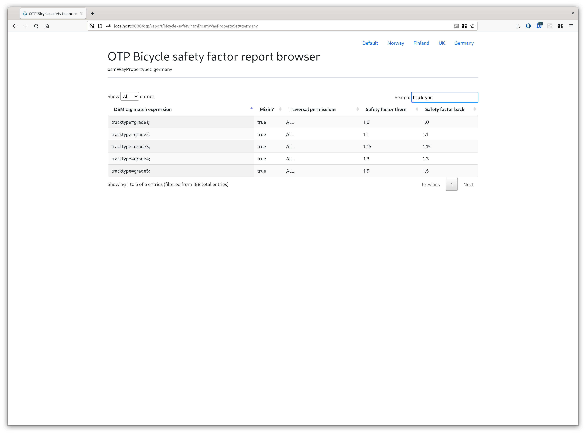

Troubleshooting Routing
Graph Builder Data Import Issues
When you build a graph, OTP may encounter clearly incorrect or ambiguous data, or may detect less
severe, but potentially problematic situations in the input data. Such problems should result in a
"Data Import Issue" being generated. These issues are logged the the DATA_IMPORT_ISSUES console
logger, depending on your need you might turn this logger on/off. At the end of the graph build
process, OTP prints a summary of all the issues, like the following:
11:35:57.515 INFO (Graph.java:970) Summary (number of each type of issues):
11:35:57.518 INFO (Graph.java:976) TurnRestrictionBad - 560
11:35:57.518 INFO (Graph.java:976) TurnRestrictionException - 15
11:35:57.518 INFO (Graph.java:976) StopLinkedTooFar - 22
11:35:57.518 INFO (Graph.java:976) HopSpeedSlow - 22
11:35:57.518 INFO (Graph.java:976) Graphwide - 1
11:35:57.518 INFO (Graph.java:976) GraphConnectivity - 407
11:35:57.519 INFO (Graph.java:976) ParkAndRideUnlinked - 1
11:35:57.519 INFO (Graph.java:976) StopNotLinkedForTransfers - 31
11:35:57.519 INFO (Graph.java:976) NoFutureDates - 1
The full set of issues can be written out to an HTML report for closer inspection. To enable the
creation of these (potentially voluminous) HTML reports, add "dataImportReport" : true to your
graph builder JSON configuration.
If the graph is saved to a file, these issues are saved with it and can be examined later. Currently the only tool for doing this is the "Graph Visualizer", which is not particularly well maintained and is intended for use by software developers familiar with OTP who can patch up the code as needed.
Debug layers
OpenTripplanner has option to ease debugging problems with graph. Older option is graph visualizer.
Which you can enable with --visualize parameter instead of --server when starting OTP. There you
can see whole graph. You can click on edges and vertices and see the metadata. It is useful to see
if street has expected options. And if connections are where they are expected.
It can be hard to use on large graphs since, whole graph is displayed at once. And it can be hard to search for specific streets since only street graph is shown without the rest of information.
Another option is to use debug layers, which shows extra layers on top of the normal debug UI map. If you want to see them you need to open the map layer selector on the top left hand side and choose the requested layer.
Currently you can choose between:
- Wheelchair access (which colors street edges red if they don't allow wheelchair or green otherwise)
- Bicycle safety (colors street edges based on how good are for cycling [smaller is better])
- Traversal permissions (colors street edges based on what types of transit modes are allowed to travel on them (Pedestrian, cycling, car are currently supported)) Traversal permissions layer also draws links from transit stops/vehicle rentals and P+R to graph. And also draws transit stops, vehicle rentals and P+R vertices with different color.
- No thru traffic - streets are colored if the edge has thru traffic restrictions (car and bicycle
=
red, car only =orange, bicycle only =blue, and no-restriction =light gray)
Interpretation Traversal permissions layer
A sample traversal permissions layer looks like the following

- Yellow lines is the link between a stop and the street graph.
- Grey lines are streets one can travel with the mode walk, bike, or car
- Green lines are paths one can travel with the mode walk only
- Red lines are streets one can travel with the mode car only
- Grey dots vertices where edges are connected. If two edges are crossing w/o a vertice at the intersection point, users will not be able to go from one street to the other. But this can be valid in case of over/under pass for example. If it's an error, it's usually caused by improperly connected OSM data (a shared OSM node is required).
OpenStreetMap Data
Tags affecting permissions and bicycle safety
OTP has a very flexible system for deciding when a street is to be allowed by pedestrians, bicycles or cars.
To configure the which settings to use for your location, please use the osmTagMapping config attribute.
In the following section we will discuss the default case, which will be used if the property is not set.
Default settings
Access tags (such as bicycle/foot = yes/no/designated) can be used to override default graph-building parameters.
As a default, foot and bicycle traffic is ''not'' allowed on highway=trunk, highway=trunk_link
, highway=motorway, highway=motorway_link, or highway=construction.
Both are allowed on highway=pedestrian, highway=cycleway, and highway=footway.
Finally, bicycles are not allowed on highway=footway when any of the following tags appear on a
footway: footway=sidewalk, public_transport=platform, or railway=platform.
Other access tags (such as access=no and access=private affect routing as well, and can be
overridden similarly. While access=no prohibits all traffic, access=private disallows through
traffic.
Bicycle safety factor
Bicycle routing is even more configurable than the other traverse modes: during graph build a so-called bicycle safety score is computed for each street. You can think of this score as a penalty for traversing this way so the lower the score the better.
For example if a way is tagged with surface=sand it receives a safety score of 100 which means
that it's 100 times worse to cycle on when compared to a way which has a safety score of 1.
How this is calculated depends on two things
- the incline of the way (not read from OSM but from the separately configured elevation data)
- its OSM tags
At request time you can then use the triangleFactors to decide how important bicycle safety is
compared to shorter distances and flatness.
Each WayPropertySet contains rules for a given set of tag matchers that influence the bicycle
safety score. For example, a rule looks like this:
This means that an OSM way with the tag highway=track is traversable by all modes (pedestrian,
bicycle, car) and that its bicycle safety score when you traverse in order of the way is 1.3 and
also 1.3 when going the other way
(smaller means more cycle-friendly).
If there is a more specific matcher like highway=track;bicycle=no and it matches a given OSM way,
it is chosen instead and its settings applied.
The score can be any positive number but the range (as of writing this) goes from 0.6 for bike
lanes to 100 for ways that consist of sand. To figure out a good value for your set of tags you
should read the bicycle safety report (see below) or the source code of your OsmTagMapper
to get a feeling for how much certain tags are penalised or rewarded.
There are also so-called mixins. These are applied on top of the most specific matchers and a single
OSM way can match many mixins. The mixins' safety values are multiplied with the value of the base
(non-mixin) match. A mixin looks like this (note the true at the end):
The Javadoc
of OSMSpecifier.java
contains the precise documentation about the syntax of the matchers.
There are a lot of rules for which tags results in a specific safety score so it's not easy to get an overview. There is however an OTP feature to get an HTML viewer with a search feature that lets you browse through the rules.

To enable it activate the Report API sandbox feature.
To view the output of the bicycle safety calculation on a map, check the debug layers.
Railway Platforms
OTP users in Helsinki have documented their best practices for coding railway platforms in OpenStreetMap. These guidelines are available in the OSM Wiki.
Transit search
The Raptor implementation support instrumentation of ACCEPT, REJECT, and DROP events for stop-arrivals and trip boardings. Use the SpeedTest to pass in a set of stops and/or a specific path to debug. This is useful when debugging why you do (not) get a particular result.
Read the logging page for more information.
GTFS Transfers.txt and NeTEx Interchange import
Transfers may have effects on the routing which may be difficult to predict. OTP can dump all imported transfers to file - transfers-debug.csv. This may help verify the result of the import or find special test cases. To turn on the export enable the slf4j logger: